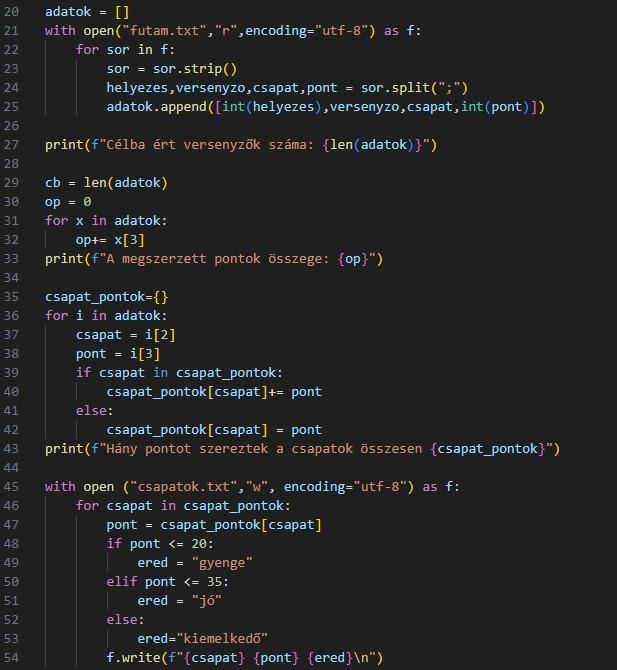
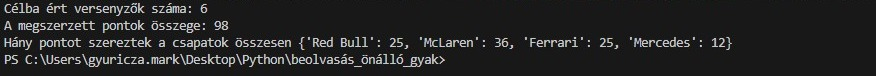

Szakmai alapok
A programozás alapjait Python nyelven sajátítottam el, ahol elsőként a logikai felépítést és az algoritmusok tervezését tanultam meg. Magabiztosan használom az elágazásokat és a különféle ciklusokat, például a while True szerkezeteket is gyakran használom a programjaim logikai vezérlésére.
Az adatok rendszerezéséhez listákat alkalmazok, a kódjaimat pedig függvényekbe és eljárásokba szervezem, hogy minden átlátható és könnyen kezelhető legyen. A tanulmányaim során a fájlkezelést is elsajátítottam, így külső adatforrásokat is be tudok olvasni, vagy az adatokat tartósan elmenteni.
Python - Adatfeldolgozási feladat
Ebben a feladatban egy olyan Python programot készítettem, amely külső adatforrásból származó statisztikák feldolgozására és elemzésére épül. A program első lépésként beolvassa a futam.txt fájl tartalmát, majd az adatokat egy rendszerezett listában tárolja el a későbbi műveletekhez.
A program meghatározza a célba ért versenyzők pontos számát, összesíti a futam során kiosztott pontokat, és egy szótár alapú logika segítségével kiszámítja, hogy az egyes csapatok hány pontot gyűjtöttek összesen. A folyamat zárásaként az eredmények a csapatok.txt fájlba kerülnek exportálásra, ahol a csapatnevek és pontszámok mellett egy feltétel alapú minősítés is helyet kap, a pontszám függvényében a teljesítmény lehet gyenge (0–20 pont), jó (21–35 pont) vagy kiemelkedő (36 pont felett).
Szerintem ez a legjobb a programozásban: több ezer sornyi adatot is le tudok futtatni másodpercek alatt, ami manuálisan esélytelen lenne. Jól látszik ezen a példán is, hogy mennyire felgyorsítja a munkámat a Python, ha nem nekem kell egyesével átnéznem a számokat, hanem rábízhatom a gépre az egész folyamat automatizálását.


Önreflexió
Bár csak ebben a tanévben kezdtem el tanulni a Pythont, ez a feladat jó alkalom volt arra, hogy megmutassam, mennyire belejöttem az alapokba. Ahogy a szakmai alapoknál is írtam, a ciklusok és a fájlkezelés már magabiztosan mennek, így nem okozott gondot az adatok beolvasása és feldolgozása sem. Élveztem a folyamatot, ahogy a nyers szöveges fájlból a végére egy tiszta, átlátható eredményt kaptam.
Nagyon jó érzés látni, hogy a kódom pontosan és hiba nélkül fut, és pont azt a statisztikát adja ki, amit a feladat kért. Ez a projekt is megerősített abban, hogy a programozásban a logikus gondolkodás a legfontosabb, és ez a sikerélmény nagy motivációt ad a későbbi, bonyolultabb feladatokhoz is.